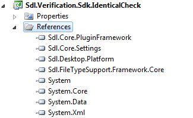
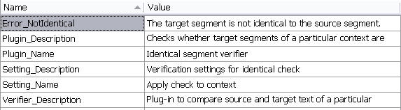

Create a New Project
This chapter explains how to set up a project for developing a global verification plug-in.
Creating the Project
Before developing plug-ins for Trados Studio, make sure that the SDK is installed on your development computer. The SDK installer adds new templates to your Microsoft Visual Studio 2022 environment, as shown in the screenshot below. For the type of plug-in discussed in this chapter, use the Trados Studio (2026) project template.

By default, a project created from this template is named, for example, Trados Studio1. Rename the project to Sdl.Verification.Sdk.IdenticalCheck for this sample implementation.
Adding the Required References
The plug-in template includes the Sdl.Core.PluginFramework.dll reference. For the global verifier implementation, you also need to reference the Verification API, i.e. Sdl.Verification.Api.dll. To implement the functionality in this example, add the following libraries used for integration with Trados Studio:
- Sdl.Desktop.Platform.dll
- Sdl.FileTypeSupport.Framework.Core
- Sdl.Core.Settings.dll
These files are typically located in the installation folder of Trados Studio, i.e. C:\Program Files\Trados\Trados Studio\Studio19. Ensure that the Copy Local property for these references is set to True.

Note
Remember to sign the assembly. Otherwise, your plug-in might not be loaded by Trados Studio.
Adding the Resources File
The project template includes a PluginResources.resx resources file, which stores strings and plug-in UI elements, such as the plug-in name and the message texts for any problems that the plug-in reports. These elements are displayed in the user interface of Trados Studio.
By default, this resources file only includes the Plugin_Name string. In our implementation, we need several other strings, such as those for setting the plug-in description and the error messages that the plug-in should display after verification. The resources table should look as follows:

The Sdl.Verification.Sdk.IdenticalCheck sample project folder also contains an icon file (icon.ico), which you can add to the resource file of your project. This icon will be displayed next to the plug-in name in the Options dialog box.